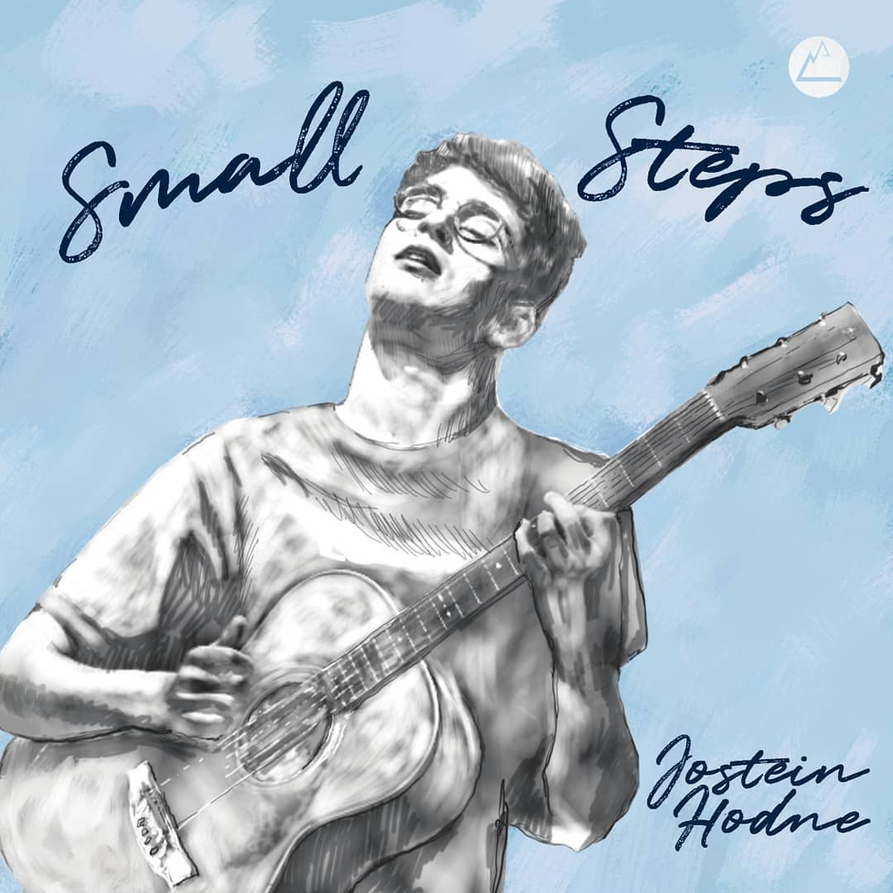
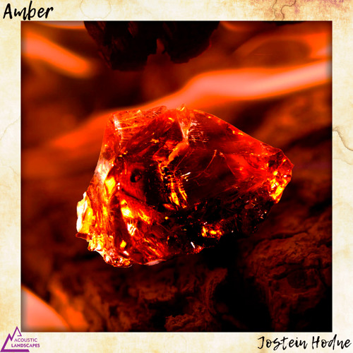
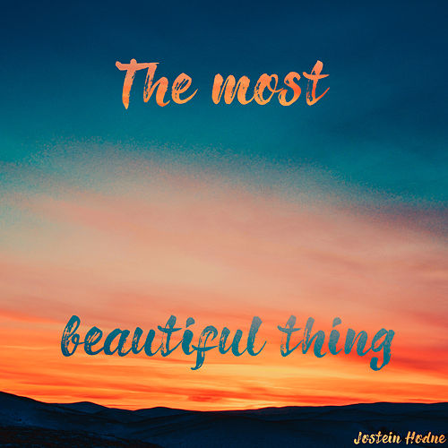

World Class Guitarist!
Jostein Hodne is a 19-year old acoustic fingerstyle guitarist based in Trondheim, Norway.
He has performed alongside internationally renowned musicians such as Calum Graham and Livio Gianola,
and has received praise from many leading figures in the guitar world such as Jon Gomm, Robin Sukroso,
Federico Casagrande and Szandor Szabo for his original compositions
and expressive playing style. Following his first-place at the 2016 Akustiske Landskap guitar festival
talent competition,
Jostein worked towards bringing these compositions to the fingerstyle guitar scene through the release
of his very virst album.
By releasing Small Steps(2019), Jostein made his debut to the guitar world, and has made a rather large
step towards him and his music getting the recognition it deserves.
The music from his debut album can be found on all music streaming sites, as well as right below this
text.

-
Sang
Album
Content
Cover
-
Amber
Small steps
Explicit
 -
a' Fatij
Small steps
Explicit
-
E du Nord
Small steps
Explicit
-
Feel
Small steps
Explicit
-
Hold Me Tight
Small steps
Explicit
-
Sí Beag, Sí Mór
Small steps
Explicit
-
The Most Beautiful Thing
Small steps
Explicit
